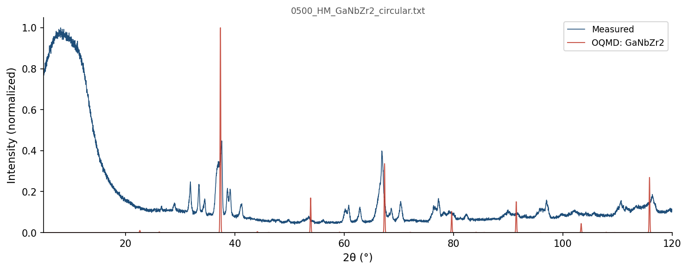

0500_HM_GaNbZr2
GaNbZr2
Basic Information
sample_number
500
sample_id
0500_HM_GaNbZr2
formula
GaNbZr2
remake_of
Not available
remake_reason
Not available
files
- SYNTHESIS
- 0500_XRD_fit.JPG
- PDF Card - 04-004-9110.cif
- 0500_HM_GaNbZr2_circular.wrk.xml
- 20251108_HM500GaNbZr2_chiAC_vs_T_B_2T.001.txt
- 0500_XRD_fit.txt
- STATUS
- 0500_HM_GaNbZr2_circular.wpf.txt
- 20251108_HM500GaNbZr2_chiAC_vs_T_B_1T.001.txt
- 0500_HM_GaNbZr2_circular.txt
- 20251108_HM500GaNbZr2_chiAC_vs_T_B_0T.003.txt
has_summary
No
Characterization
superconductivity
Tc of 9.0 K
tc_kelvin
9
xrd_type
Bulk
xrd_instrument
Both
xrd_result
not yet analyzed
Synthesis Details
synthesis_content
Raw materials:
Ga ingots (99.99999%), Lot #A16B01
Nb powder (99.99%), Lot #E21Y045
Zr sponge (99.5%), Lot #C19Y039
Procedure:
target masses
Ga: 0.05560 g, Nb: 0.07400 g, Zr: 0.14540 g
measured masses
Ga: 0.05519 g, Nb: 0.07394 g, Zr: 0.14474 g
initial mass: 0.27383 g
final mass: 0.27155 g
loss: 0.83%
Heating curve: Measured & pelleted, then arc melted, Nb powder. Then put with other weighed out materials back into arc melter & then melted/flipped 3 times for 20 sec
Ga ingots (99.99999%), Lot #A16B01
Nb powder (99.99%), Lot #E21Y045
Zr sponge (99.5%), Lot #C19Y039
Procedure:
target masses
Ga: 0.05560 g, Nb: 0.07400 g, Zr: 0.14540 g
measured masses
Ga: 0.05519 g, Nb: 0.07394 g, Zr: 0.14474 g
initial mass: 0.27383 g
final mass: 0.27155 g
loss: 0.83%
Heating curve: Measured & pelleted, then arc melted, Nb powder. Then put with other weighed out materials back into arc melter & then melted/flipped 3 times for 20 sec
mass_loss_percent
0.83
initial_mass_g
0.2738
final_mass_g
0.2716
Cost & Feasibility
price_per_gram
3.325
arc_meltable
No
disorder_probability
0.1241
prediction_list
Diffusion Model
XRD Data
xrd_patterns
Pattern 1:
Instrument: Panalytical
Date: None
Anode: None
2θ range: 5.0 - 120.0°
Points: 5751
File: 0500_XRD_fit.txt
Instrument: Panalytical
Date: None
Anode: None
2θ range: 5.0 - 120.0°
Points: 5751
File: 0500_XRD_fit.txt
Pattern 2:
Instrument: Siemens
Date: 11/01/2025
Anode: Cu
2θ range: 5.02 - 120.0°
Points: 5750
File: 0500_HM_GaNbZr2_circular.txt
Instrument: Siemens
Date: 11/01/2025
Anode: Cu
2θ range: 5.02 - 120.0°
Points: 5750
File: 0500_HM_GaNbZr2_circular.txt
xrd_files
- 0500_XRD_fit.txt
- 0500_HM_GaNbZr2_circular.txt
xrd_n_files
2
xrd_two_theta_min
5
xrd_two_theta_max
120
Susceptibility Data
chi_files
- 20251108_HM500GaNbZr2_chiAC_vs_T_B_2T.001.txt
- 20251108_HM500GaNbZr2_chiAC_vs_T_B_1T.001.txt
- 20251108_HM500GaNbZr2_chiAC_vs_T_B_0T.003.txt
chi_n_files
3
chi_has_high_field
Yes
chi_fields
- 0.0
- 1.0
- 2.0
Status
status_content
Superconductivity: Tc of 9.0 K
XRD: Bulk, Hamlin XRD, not yet analyzed
List: Diffusion Model
XRD: Bulk, Hamlin XRD, not yet analyzed
List: Diffusion Model
Composition Check
✓ Composition OK — max deviation 0.07%
| Element | Expected (mol frac) | Measured (mol frac) | Δ (mol frac) | Δ (%) |
|---|---|---|---|---|
| Ga | 0.2500 | 0.2494 | -0.0006 | -0.06% |
| Nb | 0.2500 | 0.2507 | +0.0007 | +0.07% |
| Zr | 0.5000 | 0.4999 | -0.0001 | -0.01% |
■ >2%
■ >5%
■ >10%
OQMD Thermodynamic Data
✗ Above hull - competing phases more favorable
Formation Energy (ΔHf)
-0.1858 eV/atom
Energy Above Hull
0.1637 eV/atom
OQMD Entry
Structure Files
OQMD Phases in Element System
317 entries in the Ga-Nb-Zr element system (16 on hull, 45 ICSD-tagged). Stability in meV/atom. Sorted most stable first.
| Composition | Stability (meV/atom) | ΔE (meV/atom) | ICSD | Space | Entry | CIF |
|---|---|---|---|---|---|---|
Ga3Zr1 |
-64 | -487.2 | ✓ | Ga-Zr | 2017743 | CIF |
Ga1Zr1 |
-52 | -630.0 | Ga-Zr | 1982062 | CIF | |
Ga2Nb3 |
-24 | -364.5 | ✓ | Ga-Nb | 17261 | CIF |
Ga3Nb1 |
-20 | -306.3 | ✓ | Ga-Nb | 30302 | CIF |
Ga3Nb2Zr3 |
-17 | -497.2 | Ga-Nb-Zr | 1483724 | CIF | |
Ga2Zr3 |
-13 | -544.3 | ✓ | Ga-Zr | 30373 | CIF |
Ga1Zr2 |
-12 | -466.0 | ✓ | Ga-Zr | 17131 | CIF |
Ga13Nb5 |
-8 | -318.5 | ✓ | Ga-Nb | 30300 | CIF |
Ga3Zr2 |
-7 | -611.5 | ✓ | Ga-Zr | 17318 | CIF |
Ga5Zr3 |
-5 | -598.6 | ✓ | Ga-Zr | 2027029 | CIF |
Ga2Zr1 |
-3 | -564.4 | ✓ | Ga-Zr | 17316 | CIF |
Ga1 |
+0 | 0.0 | Ga | 1214704 | CIF | |
Nb1 |
+0 | 0.0 | Nb | 1521870 | CIF | |
Nb1 |
+0 | 0.0 | Nb | 1215170 | CIF | |
Nb1 |
+0 | 0.0 | Nb | 1521875 | CIF | |
Zr1 |
+0 | -0.2 | Zr | 1791927 | CIF | |
Nb1 |
+0 | 0.0 | ✓ | Nb | 685533 | CIF |
Ga13Nb5 |
+0 | -318.4 | ✓ | Ga-Nb | 89545 | CIF |
Ga1Zr1 |
+0 | -629.9 | Ga-Zr | 1963398 | CIF | |
Nb1 |
+0 | 0.1 | Nb | 2162724 | CIF | |
Nb1 |
+0 | 0.1 | Nb | 2162619 | CIF | |
Zr1 |
+0 | 0.0 | ✓ | Zr | 67408 | CIF |
Ga1Zr2 |
+0 | -465.8 | Ga-Zr | 1925337 | CIF | |
Zr1 |
+0 | 0.1 | Zr | 758445 | CIF | |
Zr1 |
+0 | 0.1 | Zr | 758455 | CIF | |
Zr1 |
+0 | 0.2 | ✓ | Zr | 8196 | CIF |
Zr1 |
+0 | 0.2 | Zr | 1215390 | CIF | |
Zr1 |
+0 | 0.2 | Zr | 758475 | CIF | |
Zr1 |
+0 | 0.2 | Zr | 758462 | CIF | |
Zr1 |
+0 | 0.2 | Zr | 758464 | CIF | |
Ga1Zr1 |
+0 | -629.6 | ✓ | Ga-Zr | 17315 | CIF |
Zr1 |
+0 | 0.3 | Zr | 758463 | CIF | |
Zr1 |
+0 | 0.3 | Zr | 758466 | CIF | |
Ga3Nb1 |
+0 | -305.8 | ✓ | Ga-Nb | 2017763 | CIF |
Zr1 |
+0 | 0.3 | Zr | 758474 | CIF | |
Zr1 |
+0 | 0.3 | Zr | 758457 | CIF | |
Zr1 |
+1 | 0.3 | ✓ | Zr | 117515 | CIF |
Zr1 |
+1 | 0.3 | ✓ | Zr | 2030147 | CIF |
Zr1 |
+1 | 0.4 | Zr | 758448 | CIF | |
Zr1 |
+1 | 0.4 | Zr | 758450 | CIF | |
Zr1 |
+1 | 0.4 | Zr | 758465 | CIF | |
Zr1 |
+1 | 0.4 | Zr | 758449 | CIF | |
Zr1 |
+1 | 0.4 | Zr | 758470 | CIF | |
Zr1 |
+1 | 0.4 | Zr | 758456 | CIF | |
Zr1 |
+1 | 0.4 | Zr | 758453 | CIF | |
Zr1 |
+1 | 0.5 | Zr | 758472 | CIF | |
Zr1 |
+1 | 0.5 | Zr | 758461 | CIF | |
Zr1 |
+1 | 0.5 | Zr | 758471 | CIF | |
Zr1 |
+1 | 0.5 | Zr | 758458 | CIF | |
Zr1 |
+1 | 0.5 | Zr | 758451 | CIF | |
Zr1 |
+1 | 0.5 | Zr | 758454 | CIF | |
Zr1 |
+1 | 0.5 | Zr | 758460 | CIF | |
Zr1 |
+1 | 0.5 | Zr | 758473 | CIF | |
Zr1 |
+1 | 0.5 | Zr | 758452 | CIF | |
Zr1 |
+1 | 0.5 | Zr | 758446 | CIF | |
Zr1 |
+1 | 0.5 | Zr | 758444 | CIF | |
Zr1 |
+1 | 0.6 | Zr | 758459 | CIF | |
Zr1 |
+1 | 0.6 | Zr | 758447 | CIF | |
Zr1 |
+1 | 0.6 | Zr | 1926822 | CIF | |
Ga3Nb1 |
+1 | -305.3 | Ga-Nb | 303096 | CIF | |
Zr1 |
+1 | 1.0 | ✓ | Zr | 2031515 | CIF |
Zr1 |
+1 | 1.3 | Zr | 1801137 | CIF | |
Ga3Nb1Zr4 |
+2 | -504.0 | ✓ | Ga-Nb-Zr | 2026881 | CIF |
Ga2Zr1 |
+2 | -562.3 | Ga-Zr | 1794451 | CIF | |
Ga1 |
+2 | 2.1 | ✓ | Ga | 676227 | CIF |
Zr1 |
+3 | 2.9 | Zr | 1215301 | CIF | |
Ga3Nb5 |
+5 | -336.5 | ✓ | Ga-Nb | 30301 | CIF |
Ga1 |
+7 | 6.7 | ✓ | Ga | 686543 | CIF |
Ga3Zr1 |
+9 | -478.3 | Ga-Zr | 298629 | CIF | |
Ga3Zr5 |
+9 | -506.1 | ✓ | Ga-Zr | 30372 | CIF |
Ga3Zr5 |
+9 | -506.0 | Ga-Zr | 1340250 | CIF | |
Ga3Zr1 |
+9 | -477.8 | ✓ | Ga-Zr | 17317 | CIF |
Ga4Nb5 |
+10 | -347.9 | ✓ | Ga-Nb | 17262 | CIF |
Ga1Nb1Zr1 |
+12 | -429.9 | Ga-Nb-Zr | 1985474 | CIF | |
Ga1Zr3 |
+17 | -332.2 | Ga-Zr | 344195 | CIF | |
Zr1 |
+20 | 19.5 | Zr | 758468 | CIF | |
Ga1 |
+20 | 20.2 | ✓ | Ga | 2215 | CIF |
Nb2Zr1 |
+20 | 20.4 | Nb-Zr | 1610000 | CIF | |
Ga1 |
+21 | 21.0 | ✓ | Ga | 4248 | CIF |
Ga1 |
+23 | 22.5 | ✓ | Ga | 107684 | CIF |
Ga1 |
+24 | 23.7 | Ga | 1214526 | CIF | |
Ga1 |
+24 | 23.7 | ✓ | Ga | 8115 | CIF |
Ga1 |
+24 | 24.0 | Ga | 1215684 | CIF | |
Ga1 |
+25 | 25.3 | ✓ | Ga | 2295 | CIF |
Ga1 |
+26 | 26.1 | ✓ | Ga | 2814 | CIF |
Ga1Zr2 |
+26 | -439.9 | Ga-Zr | 1787228 | CIF | |
Ga1 |
+26 | 26.2 | ✓ | Ga | 676193 | CIF |
Ga1 |
+26 | 26.4 | Ga | 1215417 | CIF | |
Zr1 |
+26 | 26.2 | Zr | 1216106 | CIF | |
Ga1 |
+27 | 26.8 | Ga | 1214615 | CIF | |
Ga1 |
+29 | 29.4 | Ga | 1216040 | CIF | |
Ga1 |
+30 | 30.0 | Ga | 1214793 | CIF | |
Ga4Zr5 |
+30 | -552.2 | Ga-Zr | 1795269 | CIF | |
Ga4Zr5 |
+30 | -552.0 | Ga-Zr | 1822752 | CIF | |
Ga4Zr5 |
+30 | -552.0 | ✓ | Ga-Zr | 2017670 | CIF |
Ga1 |
+33 | 33.0 | Ga | 1215060 | CIF | |
Ga1 |
+33 | 33.0 | Ga | 1215327 | CIF | |
Nb2Zr1 |
+35 | 35.0 | Nb-Zr | 1610090 | CIF | |
Ga1 |
+35 | 35.2 | Ga | 1215773 | CIF | |
Ga3Zr1 |
+36 | -450.9 | ✓ | Ga-Zr | 2033547 | CIF |
Ga2Nb2Zr1 |
+37 | -407.4 | Ga-Nb-Zr | 1491494 | CIF | |
Ga3Zr1 |
+38 | -448.7 | Ga-Zr | 344129 | CIF | |
Ga1 |
+39 | 38.6 | ✓ | Ga | 2030265 | CIF |
Ga1 |
+39 | 39.4 | Ga | 1521920 | CIF | |
Ga1 |
+39 | 39.4 | Ga | 1521916 | CIF | |
Ga1 |
+40 | 39.8 | Ga | 1215149 | CIF | |
Zr1 |
+40 | 39.7 | ✓ | Zr | 7509 | CIF |
Zr1 |
+40 | 39.7 | Zr | 1214589 | CIF | |
Ga1 |
+42 | 41.8 | Ga | 1215238 | CIF | |
Ga2Nb1 |
+42 | -284.4 | Ga-Nb | 1800945 | CIF | |
Zr1 |
+43 | 42.4 | Zr | 1215747 | CIF | |
Ga1Zr3 |
+43 | -306.4 | Ga-Zr | 319709 | CIF | |
Ga1Zr3 |
+43 | -306.3 | Ga-Zr | 756799 | CIF | |
Ga1Zr3 |
+43 | -306.1 | Ga-Zr | 756802 | CIF | |
Ga2Nb1Zr2 |
+44 | -480.0 | Ga-Nb-Zr | 1491493 | CIF | |
Ga1 |
+44 | 43.9 | Ga | 1214882 | CIF | |
Ga3Nb2 |
+44 | -291.7 | Ga-Nb | 1471730 | CIF | |
Ga1Zr3 |
+48 | -302.0 | Ga-Zr | 1280438 | CIF | |
Ga5Nb2 |
+48 | -271.4 | Ga-Nb | 1796778 | CIF | |
Zr1 |
+48 | 48.2 | Zr | 1215480 | CIF | |
Ga3Zr4 |
+49 | -519.9 | Ga-Zr | 1782921 | CIF | |
Ga1Nb3 |
+49 | -178.4 | ✓ | Ga-Nb | 18843 | CIF |
Nb1Zr1 |
+51 | 50.5 | Nb-Zr | 757306 | CIF | |
Nb1Zr1 |
+51 | 51.2 | Nb-Zr | 2082164 | CIF | |
Nb1Zr1 |
+51 | 51.2 | Nb-Zr | 2082203 | CIF | |
Nb2Zr1 |
+52 | 51.5 | Nb-Zr | 1592014 | CIF | |
Nb2Zr1 |
+52 | 51.6 | Nb-Zr | 1339117 | CIF | |
Ga1Zr3 |
+54 | -296.0 | Ga-Zr | 298563 | CIF | |
Nb3Zr1 |
+54 | 53.5 | Nb-Zr | 2086152 | CIF | |
Nb1Zr3 |
+54 | 54.0 | Nb-Zr | 2080733 | CIF | |
Nb3Zr1 |
+55 | 55.5 | Nb-Zr | 2080597 | CIF | |
Zr1 |
+56 | 56.0 | Zr | 1215836 | CIF | |
Zr1 |
+56 | 56.0 | Zr | 1214678 | CIF | |
Ga1 |
+58 | 58.5 | Ga | 1214971 | CIF | |
Nb3Zr1 |
+60 | 59.6 | Nb-Zr | 2082353 | CIF | |
Nb3Zr1 |
+60 | 59.6 | Nb-Zr | 2082464 | CIF | |
Ga3Zr2 |
+61 | -550.7 | Ga-Zr | 1794601 | CIF | |
Ga1 |
+62 | 61.6 | Ga | 1280429 | CIF | |
Ga3Nb2 |
+62 | -274.1 | Ga-Nb | 1794603 | CIF | |
Ga1 |
+63 | 63.4 | Ga | 1215595 | CIF | |
Nb1Zr1 |
+70 | 69.8 | Nb-Zr | 2085880 | CIF | |
Nb1Zr2 |
+70 | 70.1 | Nb-Zr | 757317 | CIF | |
Nb1Zr1 |
+70 | 70.4 | Nb-Zr | 2080489 | CIF | |
Ga1Zr3 |
+71 | -278.3 | Ga-Zr | 756811 | CIF | |
Nb1Zr3 |
+72 | 72.3 | Nb-Zr | 2086016 | CIF | |
Nb1Zr1 |
+73 | 72.5 | Nb-Zr | 757297 | CIF | |
Nb3Zr1 |
+75 | 74.5 | Nb-Zr | 310264 | CIF | |
Nb1Zr1 |
+75 | 74.8 | Nb-Zr | 2084823 | CIF | |
Nb1 |
+76 | 75.9 | Nb | 1215883 | CIF | |
Zr1 |
+80 | 79.6 | ✓ | Zr | 9320 | CIF |
Zr1 |
+80 | 79.9 | Zr | 1215212 | CIF | |
Ga2Zr1 |
+80 | -484.1 | Ga-Zr | 1521631 | CIF | |
Zr1 |
+81 | 80.3 | Zr | 1215925 | CIF | |
Nb1Zr1 |
+81 | 80.5 | Nb-Zr | 757294 | CIF | |
Nb1Zr1 |
+82 | 82.2 | Nb-Zr | 757302 | CIF | |
Nb3Zr4 |
+83 | 82.7 | Nb-Zr | 757295 | CIF | |
Nb1Zr1 |
+84 | 83.6 | Nb-Zr | 757299 | CIF | |
Ga1Nb2 |
+84 | -220.1 | Ga-Nb | 1787230 | CIF | |
Nb1Zr3 |
+85 | 85.2 | Nb-Zr | 2082314 | CIF | |
Nb1Zr3 |
+85 | 85.3 | Nb-Zr | 2082503 | CIF | |
Nb1Zr1 |
+86 | 85.7 | Nb-Zr | 757300 | CIF | |
Ga2Zr1 |
+86 | -478.4 | Ga-Zr | 1591335 | CIF | |
Nb1Zr5 |
+89 | 88.9 | Nb-Zr | 757308 | CIF | |
Ga1Zr5 |
+90 | -142.6 | Ga-Zr | 756796 | CIF | |
Ga1 |
+91 | 90.9 | Ga | 1215862 | CIF | |
Zr1 |
+91 | 90.8 | Zr | 1214945 | CIF | |
Ga3Nb5 |
+95 | -246.7 | ✓ | Ga-Nb | 30303 | CIF |
Nb1Zr1 |
+95 | 95.0 | Nb-Zr | 757321 | CIF | |
Nb1Zr1 |
+99 | 98.5 | Nb-Zr | 2082613 | CIF | |
Nb1Zr1 |
+99 | 98.6 | Nb-Zr | 757305 | CIF | |
Ga1Nb3 |
+102 | -125.8 | Ga-Nb | 348666 | CIF | |
Nb1Zr3 |
+104 | 103.7 | Nb-Zr | 757323 | CIF | |
Nb1Zr1 |
+105 | 104.6 | Nb-Zr | 2083279 | CIF | |
Nb1 |
+105 | 105.0 | Nb | 1214992 | CIF | |
Nb1 |
+105 | 105.0 | Nb | 1280310 | CIF | |
Nb1Zr3 |
+108 | 107.7 | Nb-Zr | 314796 | CIF | |
Ga2Nb2Zr1 |
+108 | -335.9 | Ga-Nb-Zr | 1253001 | CIF | |
Ga3Zr1 |
+112 | -375.3 | Ga-Zr | 319643 | CIF | |
Nb1Zr2 |
+112 | 111.8 | Nb-Zr | 757309 | CIF | |
Ga1Zr1 |
+112 | -517.8 | Ga-Zr | 336540 | CIF | |
Nb1Zr3 |
+118 | 117.7 | Nb-Zr | 757314 | CIF | |
Ga1Zr2 |
+118 | -347.8 | Ga-Zr | 756791 | CIF | |
Ga1Zr2 |
+124 | -342.3 | Ga-Zr | 756808 | CIF | |
Nb1Zr1 |
+126 | 126.3 | Nb-Zr | 305559 | CIF | |
Nb1Zr3 |
+132 | 131.8 | Nb-Zr | 757311 | CIF | |
Nb1Zr3 |
+132 | 132.2 | Nb-Zr | 320806 | CIF | |
Ga1Zr1 |
+132 | -497.6 | Ga-Zr | 756793 | CIF | |
Zr1 |
+134 | 133.9 | Zr | 1214856 | CIF | |
Zr1 |
+137 | 136.3 | Zr | 1215034 | CIF | |
Zr1 |
+137 | 136.4 | Zr | 1280431 | CIF | |
Nb1Zr2 |
+137 | 136.6 | Nb-Zr | 757303 | CIF | |
Zr1 |
+137 | 136.7 | Zr | 1280432 | CIF | |
Nb1Zr3 |
+143 | 142.5 | Nb-Zr | 345292 | CIF | |
Nb1Zr3 |
+143 | 142.5 | Nb-Zr | 304254 | CIF | |
Nb1Zr1 |
+143 | 142.8 | Nb-Zr | 757296 | CIF | |
Nb3Zr1 |
+143 | 143.0 | Nb-Zr | 1280369 | CIF | |
Nb1 |
+145 | 144.9 | ✓ | Nb | 2030157 | CIF |
Nb1Zr1 |
+145 | 145.0 | Nb-Zr | 757313 | CIF | |
Ga1 |
+145 | 145.3 | Ga | 1215951 | CIF | |
Nb1 |
+147 | 147.2 | Nb | 1215705 | CIF | |
Nb1Zr1 |
+149 | 149.2 | Nb-Zr | 757318 | CIF | |
Nb1Zr2 |
+149 | 149.4 | Nb-Zr | 757293 | CIF | |
Ga1Nb3 |
+151 | -76.8 | Ga-Nb | 324180 | CIF | |
Ga1Nb3 |
+160 | -67.6 | Ga-Nb | 309682 | CIF | |
Nb1Zr1 |
+161 | 160.8 | Nb-Zr | 757298 | CIF | |
Ga1Nb1Zr2 |
+164 | -185.8 | Ga-Nb-Zr | 557959 | CIF | |
Nb1 |
+167 | 166.6 | Nb | 1214814 | CIF | |
Ga1Nb3 |
+167 | -60.7 | Ga-Nb | 299140 | CIF | |
Nb1Zr2 |
+169 | 168.8 | Nb-Zr | 757316 | CIF | |
Nb1 |
+174 | 173.6 | ✓ | Nb | 2030113 | CIF |
Ga3Zr4 |
+175 | -393.9 | Ga-Zr | 756795 | CIF | |
Ga1Nb1 |
+176 | -174.2 | Ga-Nb | 1229535 | CIF | |
Nb1Zr1 |
+180 | 179.5 | Nb-Zr | 757319 | CIF | |
Ga1Zr2 |
+180 | -285.8 | Ga-Zr | 756804 | CIF | |
Ga1Zr1 |
+181 | -448.6 | Ga-Zr | 756806 | CIF | |
Nb1Zr1 |
+184 | 184.0 | Nb-Zr | 757312 | CIF | |
Nb3Zr1 |
+184 | 184.0 | Nb-Zr | 299722 | CIF | |
Nb3Zr4 |
+184 | 184.2 | Nb-Zr | 757307 | CIF | |
Zr1 |
+184 | 184.2 | Zr | 1215123 | CIF | |
Ga1Zr1 |
+188 | -442.0 | Ga-Zr | 756807 | CIF | |
Nb1Zr1 |
+188 | 188.0 | Nb-Zr | 757322 | CIF | |
Ga3Nb1 |
+190 | -116.2 | Ga-Nb | 320224 | CIF | |
Nb1 |
+198 | 197.7 | Nb | 1215259 | CIF | |
Ga1Zr2 |
+200 | -265.9 | Ga-Zr | 756797 | CIF | |
Ga1Nb2Zr1 |
+201 | -130.8 | Ga-Nb-Zr | 738088 | CIF | |
Nb1 |
+202 | 202.0 | Nb | 1801139 | CIF | |
Nb1 |
+202 | 202.1 | ✓ | Nb | 2031499 | CIF |
Ga1Zr3 |
+205 | -144.4 | Ga-Zr | 309101 | CIF | |
Ga3Nb1 |
+205 | -100.8 | Ga-Nb | 344710 | CIF | |
Nb1 |
+213 | 213.0 | Nb | 1214903 | CIF | |
Nb3Zr4 |
+215 | 214.8 | Nb-Zr | 1450712 | CIF | |
Ga1Nb1 |
+224 | -125.9 | Ga-Nb | 338786 | CIF | |
Nb1Zr1 |
+232 | 231.9 | Nb-Zr | 757301 | CIF | |
Nb1Zr1 |
+233 | 233.2 | Nb-Zr | 757304 | CIF | |
Ga2Nb1 |
+233 | -93.1 | Ga-Nb | 1576915 | CIF | |
Nb1Zr1 |
+237 | 236.6 | Nb-Zr | 1230506 | CIF | |
Nb1Zr1 |
+237 | 236.8 | Nb-Zr | 1236154 | CIF | |
Ga1Nb1 |
+239 | -111.1 | Ga-Nb | 328328 | CIF | |
Nb1Zr1 |
+239 | 239.2 | Nb-Zr | 326643 | CIF | |
Ga1Zr2 |
+244 | -221.6 | Ga-Zr | 756781 | CIF | |
Ga1Zr1 |
+245 | -385.0 | Ga-Zr | 304998 | CIF | |
Nb1Zr2 |
+251 | 251.3 | Nb-Zr | 757320 | CIF | |
Ga3Nb5 |
+254 | -88.2 | ✓ | Ga-Nb | 89543 | CIF |
Nb1 |
+268 | 268.4 | Nb | 1214636 | CIF | |
Nb3Zr1 |
+272 | 271.9 | Nb-Zr | 325338 | CIF | |
Ga1Zr1 |
+279 | -351.2 | Ga-Zr | 756784 | CIF | |
Ga1 |
+285 | 284.7 | Ga | 1215506 | CIF | |
Ga3Zr1 |
+286 | -201.0 | Ga-Zr | 1338664 | CIF | |
Ga1Nb1Zr2 |
+287 | -62.9 | Ga-Nb-Zr | 739655 | CIF | |
Nb3Zr1 |
+289 | 288.9 | Nb-Zr | 349824 | CIF | |
Ga2Nb1 |
+289 | -37.0 | Ga-Nb | 1791938 | CIF | |
Nb1 |
+291 | 291.4 | Nb | 1215438 | CIF | |
Nb1 |
+293 | 293.0 | Nb | 1216064 | CIF | |
Nb1 |
+296 | 296.2 | ✓ | Nb | 2029911 | CIF |
Nb1 |
+297 | 297.4 | Nb | 1215348 | CIF | |
Ga1Zr1 |
+298 | -332.4 | Ga-Zr | 756787 | CIF | |
Zr1 |
+298 | 297.8 | Zr | 1214767 | CIF | |
Ga2Nb1Zr1 |
+298 | -213.2 | Ga-Nb-Zr | 520940 | CIF | |
Nb2Zr1 |
+303 | 302.9 | Nb-Zr | 1520527 | CIF | |
Ga1Nb1 |
+303 | -46.8 | Ga-Nb | 1522282 | CIF | |
Ga1Nb1 |
+304 | -46.5 | Ga-Nb | 307244 | CIF | |
Ga1Zr1 |
+317 | -312.9 | Ga-Zr | 756801 | CIF | |
Ga1Zr1 |
+318 | -311.6 | Ga-Zr | 756785 | CIF | |
Ga1Zr2 |
+321 | -144.6 | Ga-Zr | 756805 | CIF | |
Nb1 |
+322 | 321.8 | Nb | 1214547 | CIF | |
Nb1 |
+322 | 321.8 | ✓ | Nb | 676151 | CIF |
Nb1 |
+324 | 323.6 | Nb | 1215794 | CIF | |
Ga1Zr1 |
+324 | -306.0 | Ga-Zr | 1104184 | CIF | |
Ga1Zr1 |
+325 | -305.1 | Ga-Zr | 1229575 | CIF | |
Ga1Zr1 |
+325 | -305.1 | Ga-Zr | 1236132 | CIF | |
Ga1Zr1 |
+325 | -304.7 | Ga-Zr | 326082 | CIF | |
Ga1Zr1 |
+327 | -303.1 | Ga-Zr | 756780 | CIF | |
Ga3Zr4 |
+338 | -230.6 | Ga-Zr | 756783 | CIF | |
Nb1 |
+344 | 343.7 | Nb | 1215081 | CIF | |
Ga1Zr1 |
+358 | -271.7 | Ga-Zr | 756809 | CIF | |
Ga1Nb2Zr1 |
+365 | 33.9 | Ga-Nb-Zr | 487309 | CIF | |
Ga1Zr1 |
+371 | -259.4 | Ga-Zr | 756800 | CIF | |
Ga1Nb1 |
+371 | 21.2 | Ga-Nb | 1106429 | CIF | |
Ga1Zr1 |
+373 | -257.1 | Ga-Zr | 756788 | CIF | |
Ga1Nb1 |
+383 | 32.4 | Ga-Nb | 1244251 | CIF | |
Ga1Zr1 |
+385 | -245.4 | Ga-Zr | 756782 | CIF | |
Ga1Zr1 |
+386 | -243.8 | Ga-Zr | 756810 | CIF | |
Ga1Zr1 |
+402 | -228.3 | Ga-Zr | 756786 | CIF | |
Ga1Zr1 |
+417 | -213.1 | Ga-Zr | 756792 | CIF | |
Nb1Zr2 |
+421 | 420.8 | Nb-Zr | 1609959 | CIF | |
Ga1Zr1 |
+421 | -208.7 | Ga-Zr | 756789 | CIF | |
Ga1Zr1 |
+430 | -199.7 | Ga-Zr | 756790 | CIF | |
Ga1Zr1 |
+436 | -194.1 | Ga-Zr | 756794 | CIF | |
Zr1 |
+439 | 438.5 | Zr | 1277957 | CIF | |
Nb1 |
+442 | 442.5 | Nb | 1214725 | CIF | |
Nb1Zr2 |
+448 | 448.2 | Nb-Zr | 1610049 | CIF | |
Nb1Zr1 |
+474 | 473.7 | Nb-Zr | 337101 | CIF | |
Zr1 |
+484 | 483.8 | Zr | 1215658 | CIF | |
Ga3Zr1 |
+496 | 8.8 | Ga-Zr | 309167 | CIF | |
Nb1Zr2 |
+497 | 496.4 | Nb-Zr | 1591940 | CIF | |
Ga1Nb1Zr1 |
+522 | 80.0 | Ga-Nb-Zr | 952037 | CIF | |
Ga1Nb1 |
+589 | 239.2 | Ga-Nb | 1244252 | CIF | |
Ga3Nb1 |
+596 | 290.2 | Ga-Nb | 313638 | CIF | |
Nb1 |
+601 | 601.3 | Nb | 1215616 | CIF | |
Ga1Nb2 |
+647 | 343.6 | Ga-Nb | 1592006 | CIF | |
Ga2Nb1Zr1 |
+652 | 140.8 | Ga-Nb-Zr | 1140989 | CIF | |
Ga1Zr2 |
+725 | 258.9 | Ga-Zr | 1591932 | CIF | |
Nb1Zr1 |
+981 | 980.7 | Nb-Zr | 1104744 | CIF | |
Ga1Nb1Zr1 |
+1123 | 681.2 | Ga-Nb-Zr | 918410 | CIF | |
Zr1 |
+1140 | 1139.4 | Zr | 1216014 | CIF | |
Ga1Nb1Zr1 |
+1281 | 838.9 | Ga-Nb-Zr | 989057 | CIF | |
Nb1 |
+1385 | 1385.1 | Nb | 1215972 | CIF | |
Ga1Zr1 |
+1428 | 797.6 | Ga-Zr | 1222604 | CIF | |
Ga1Nb1 |
+1666 | 1315.4 | Ga-Nb | 1222564 | CIF | |
Ga2Nb1 |
+1973 | 1646.7 | Ga-Nb | 1237486 | CIF | |
Ga2Zr1 |
+2095 | 1530.4 | Ga-Zr | 1238615 | CIF | |
Zr1 |
+2410 | 2409.6 | Zr | 1215569 | CIF | |
Nb1Zr1 |
+2536 | 2536.2 | Nb-Zr | 1223535 | CIF | |
Nb1 |
+2545 | 2544.7 | Nb | 1215527 | CIF | |
Nb1Zr2 |
+2670 | 2669.9 | Nb-Zr | 1241124 | CIF | |
Ga1Zr2 |
+2796 | 2330.1 | Ga-Zr | 1238614 | CIF | |
Ga1Nb2 |
+3488 | 3184.0 | Ga-Nb | 1237485 | CIF |
Showing 10
of 317 entries.
Susceptibility Analysis


Fit Parameters
| Model | Hc2(0) (T) | Tc (K) |
|---|---|---|
| Linear | 14.155 | 9.055 |
| Quadratic | 7.588 | 9.049 |
XRD Rietveld Fit

Fit Quality
R = 16.35% | E = 2.94% | R/E = 5.56 | χ² = 0.0269
Phases
| Phase | Formula | Crystal System | Space Group | Lattice Parameters (Å / °) | Bragg-R |
|---|---|---|---|---|---|
| Niobium Zirconium | Zr0.5Nb0.5 | Cubic | Im-3m (229) | a = 3.4548(37) | 16.35% |
Reference CIFs
XRD: Measured vs. Predicted
OQMD stable phase · stability = +0.164 eV/atom above hull


Known Superconductors in Element System
Closest Tc: Nb1-xOx
|
ΔTc = 0.03 K from measured 9.00 K
Nb99.861O0.139
| Tc = 9.03 K
| 10.1103/PhysRevB.9.888
ΔTc = 0.03 K from measured 9.00 K
112 known superconductor(s) in the GaNbZr2 element system. Sorted by Tc descending. ■ closest composition ■ closest Tc
| Compound | Formula | Tc (K) | Reference |
|---|---|---|---|
| Nb3Ga | Ga1Nb3 |
20.50 | Search |
| Ga0.4Nb0.6 | Ga0.4Nb0.6 |
20.30 | Search |
| Ga1Nb3 | Ga1Nb3 |
20.30 | Search |
| Nb-Ga | Ga0.32Nb0.68 |
20.20 | Search |
| Nb-Ga | Ga0.245Nb0.755 |
20.20 | Search |
| Nb3Ga | Ga0.245Nb0.755 |
20.20 | Search |
| Ga1Nb3 | Ga1Nb3 |
20.10 | Search |
| Nb3Ga | Ga0.25Nb0.75 |
20.00 | Search |
| Ga0.251Nb0.749 | Ga0.251Nb0.749 |
19.90 | Search |
| Nb3Ga | Ga1Nb3 |
19.80 | Search |
| Nb80Ga20 | Ga20Nb80 |
18.20 | Search |
| Nb75(Ga,Al)25 | Ga25Nb75 |
17.60 | Search |
| Nb3Ga | Ga1Nb3 |
16.50 | Search |
| Nb-Ga | Ga0.3Nb0.7 |
16.30 | Search |
| Nb3Ga | Ga1Nb3 |
16.10 | Search |
| Nb3Ga | Ga1Nb3 |
16.10 | Search |
| Nb3Ga | Ga1Nb3 |
16.00 | Search |
| Nb78Ga22 | Ga22Nb78 |
15.60 | Search |
| Nb80Ga20 | Ga20Nb80 |
15.40 | Search |
| Nb0.8Ga0.2 | Ga0.2Nb0.8 |
15.30 | Search |
| Nb80Ga20 | Ga20Nb80 |
15.20 | Search |
| Ga1Nb3 | Ga1Nb3 |
14.50 | Search |
| Nb3Ga | Ga1Nb3 |
14.50 | Search |
| Nb-Ga | Ga0.19Nb0.81 |
13.30 | Search |
| Nb3Ga | Ga0.19Nb0.81 |
13.30 | Search |
| Nb0.75Zr0.25 | Nb0.75Zr0.25 |
11.00 | 10.1103/PhysRev.158.340 |
| Zr1-xNbx | Nb0.8Zr0.2 |
10.90 | 10.1103/PhysRev.123.1569 |
| Nb0.85Zr0.15 | Nb0.85Zr0.15 |
10.80 | 10.1143/JPSJ.22.238 |
| Nb0.66Zr0.33 | Nb0.66Zr0.33 |
10.80 | Search |
| Nb0.75Zr0.25 | Nb0.75Zr0.25 |
10.80 | Search |
| Zr1-xNbx | Nb0.7Zr0.3 |
10.80 | 10.1103/PhysRev.123.1569 |
| Nb0.5Zr0.5 | Nb0.5Zr0.5 |
10.75 | Search |
| Nb0.6Zr0.4 | Nb0.6Zr0.4 |
10.75 | Search |
| Zr1-xNbx | Nb0.9Zr0.1 |
10.70 | 10.1103/PhysRev.123.1569 |
| Zr1-xNbx | Nb0.75Zr0.25 |
10.70 | Search |
| Nb1-xZrx | Nb0.75Zr0.25 |
10.60 | 10.1143/JPSJ.22.238 |
| Nb1-xZrx | Nb0.65Zr0.35 |
10.60 | 10.1143/JPSJ.22.238 |
| Nb0.25Zr0.75 | Nb0.25Zr0.75 |
10.45 | Search |
| Zr1-xNbx | Nb0.5Zr0.5 |
10.40 | Search |
| Zr1-xNbx | Nb0.6Zr0.4 |
10.30 | 10.1103/PhysRev.123.1569 |
| Zr1-xNbx | Nb0.5Zr0.5 |
10.30 | Search |
| Nb50Zr50 | Nb50Zr50 |
10.20 | Search |
| Nb0.68Zr0.32 | Nb0.68Zr0.32 |
10.05 | Search |
| Nb | Nb1 |
9.71 | 10.1103/PhysRevB.72.064503 |
| Nb1-xZrx | Nb0.5Zr0.5 |
9.70 | 10.1143/JPSJ.22.238 |
| Nb | Nb1 |
9.47 | 10.1103/PhysRevB.72.064503 |
| Zr1-xNbx | Nb0.5Zr0.5 |
9.46 | 10.1103/PhysRev.123.1569 |
| Zr1-xNbx | Nb0.35Zr0.65 |
9.45 | Search |
| Nb | Nb1 |
9.40 | Search |
| Nb | Nb1 |
9.40 | Search |
| Nb | Nb1 |
9.27 | 10.1103/PhysRevB.9.108 |
| Nb | Nb1 |
9.25 | 10.1103/PhysRev.149.231 |
| Nb1-xOx | Nb99.976O0.024 |
9.23 | 10.1103/PhysRevB.9.888 |
| Nb | Nb1 |
9.23 | Search |
| Nb | Nb1 |
9.21 | 10.1103/PhysRev.176.562 |
| Nb | Nb1 |
9.20 | 10.1103/PhysRevLett.79.4262 |
| Nb0.2Zr0.8 | Nb0.2Zr0.8 |
9.20 | Search |
| Nb | Nb1 |
9.20 | 10.1103/PhysRev.123.1569 |
| Nb | Nb1 |
9.20 | 10.1143/JPSJ.22.238 |
| Nb | Nb1 |
9.18 | Search |
| Nb | Nb1 |
9.16 | Search |
| Nb | Nb1 |
9.10 | Search |
| Nb | Nb1 |
9.09 | 10.1103/PhysRevB.72.064503 |
| Nb1-xOx | Nb99.861O0.139 |
9.03 | 10.1103/PhysRevB.9.888 |
| Zr1-xNbx | Nb0.4Zr0.6 |
8.86 | 10.1103/PhysRev.123.1569 |
| Nb | Nb1 |
8.81 | 10.1103/PhysRevB.72.064503 |
| Nb | Nb1 |
8.80 | Search |
| NB0.38Zr0.62 | Nb0.38Zr0.62 |
8.70 | 10.1103/PhysRev.158.340 |
| Zr1-xNbx | Nb0.25Zr0.75 |
8.60 | Search |
| Ga1 | Ga1 |
8.50 | Search |
| Nb1-xOx | Nb99.445O0.555 |
8.50 | 10.1103/PhysRevB.9.888 |
| Ga1 | Ga1 |
8.45 | 10.1103/PhysRevLett.20.1496 |
| Nb25Zr75 | Nb25Zr75 |
8.30 | Search |
| Nb1-xZrx | Nb0.25Zr0.75 |
8.30 | 10.1143/JPSJ.22.238 |
| Ga | Ga1 |
8.20 | 10.1103/PhysRevB.34.4920 |
| Nb3Ga | Ga1Nb3 |
8.20 | Search |
| Nb1-xOx | Nb99.078O0.922 |
8.10 | 10.1103/PhysRevB.9.888 |
| Nb0.2Zr0.8 | Nb0.2Zr0.8 |
8.00 | Search |
| Nb | Nb1 |
7.95 | 10.1103/PhysRevB.72.064503 |
| Ga1 | Ga1 |
7.85 | Search |
| Nb1-xOx | Nb98.68O1.32 |
7.85 | 10.1103/PhysRevB.9.888 |
| amorphous-Ga | Ga1 |
7.84 | 10.1103/PhysRevB.11.738 |
| Ga1 | Ga1 |
7.60 | Search |
| Nb0.1Zr0.9 | Nb0.1Zr0.9 |
7.60 | Search |
| Nb1-xOx | Nb98O2 |
7.33 | 10.1103/PhysRevB.9.888 |
| Nb | Nb1 |
7.13 | 10.1103/PhysRevB.72.064503 |
| (Nb,Zr) | Nb0.15Zr0.85 |
6.50 | Search |
| Nb0.13Zr0.87 | Nb0.13Zr0.87 |
6.42 | Search |
| NB0.15Zr0.85 | Nb0.15Zr0.85 |
6.20 | Search |
| Nb1-xOx | Nb96.5O3.5 |
6.13 | 10.1103/PhysRevB.9.888 |
| beta-Ga | Ga1 |
6.07 | 10.1103/PhysRevB.10.4572 |
| beta-Ga | Ga1 |
6.04 | 10.1103/PhysRevB.97.184517 |
| Nb0.04Zr0.96 | Nb0.04Zr0.96 |
4.90 | Search |
| Ga3Zr5 | Ga3Zr5 |
3.85 | Search |
| a-Zr | Zr1 |
3.50 | Search |
| Ga1 | Ga1 |
3.07 | 10.1103/PhysRevB.10.4572 |
| Zr1-xNbx | Nb0.005Zr0.995 |
1.86 | Search |
| Nb1O1 | Nb1O1 |
1.50 | Search |
| O1b1 | Nb1O1 |
1.39 | Search |
| Ga3Zr1 | Ga3Zr1 |
1.38 | Search |
| Ga3Nb5 | Ga3Nb5 |
1.35 | Search |
| Nb1O1 | Nb1O1 |
1.25 | Search |
| Ga1 | Ga1 |
1.08 | 10.1103/PhysRev.150.315 |
| alpha-Ga | Ga1 |
1.08 | 10.1103/PhysRevB.97.184517 |
| Ga | Ga1 |
1.08 | 10.1103/PhysRev.134.A385 |
| Ga | Ga1 |
1.06 | Search |
| omega-Zr | Zr1 |
0.92 | Search |
| Zr | Zr1 |
0.55 | Search |
| Zr | Zr1 |
0.52 | 10.1143/JPSJ.59.3843 |
| alpha-Zr | Zr1 |
0.52 | Search |
| Zr | Zr1 |
0.49 | Search |
| Ga1Zr2 | Ga1Zr2 |
0.38 | Search |
Showing 10 of 112 entries.